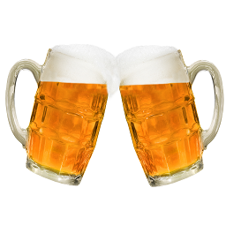

Beer geek
MALTE
A cerveja Beer-Geek utiliza malte como ingrediente de cereais maltados,
onde passa por um processo de germinação parcial através da umidificação dos grãos.
O tipo de malte que usamos e extremamente escolhido por nossa equipe para usar na produção da cerveja.
Para maltes mais claros o tempo e a temperatura de secagem são menores conservando as enzimas geradas durante a germinação.
Maltes escuros necessitam de torra com temperaturas entre 200°C a 300°C. Quanto maior a temperatura, maior a perca enzimática do grão.